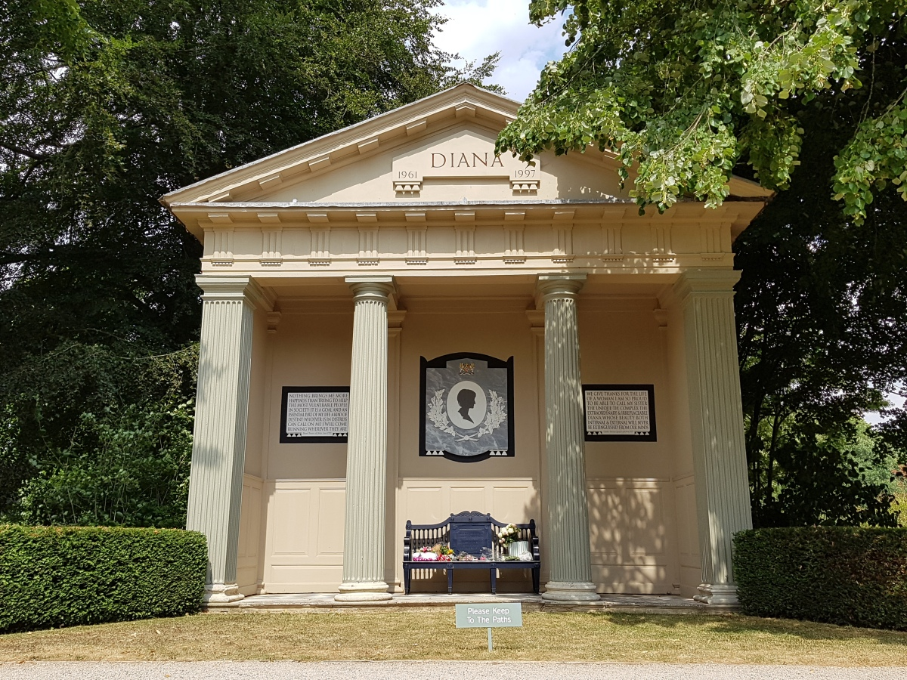
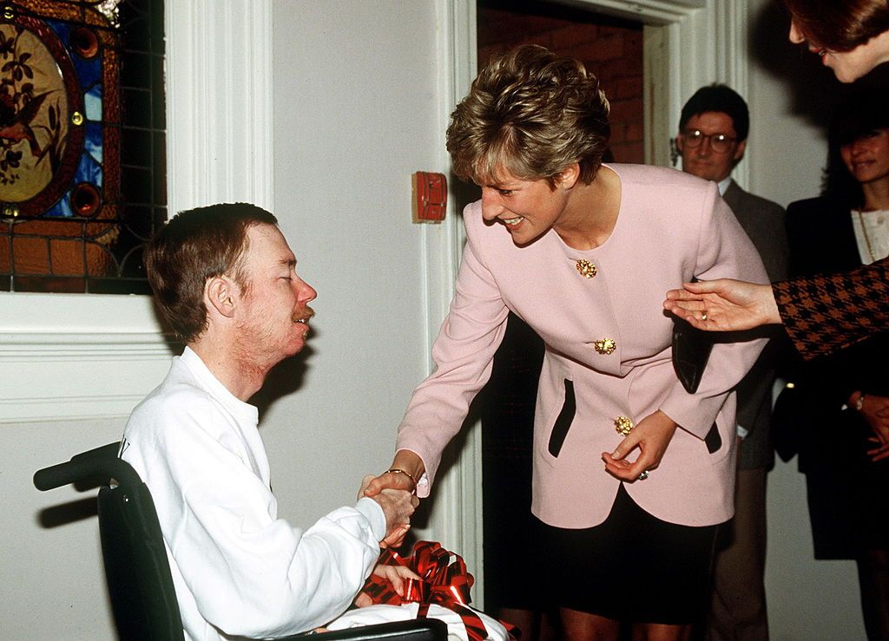
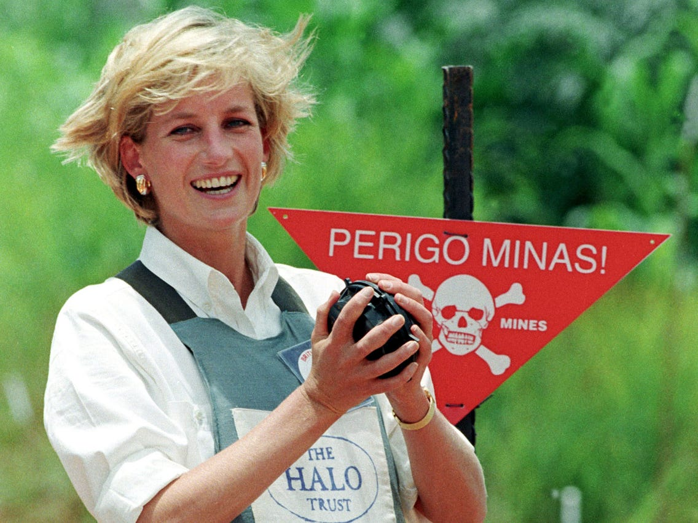
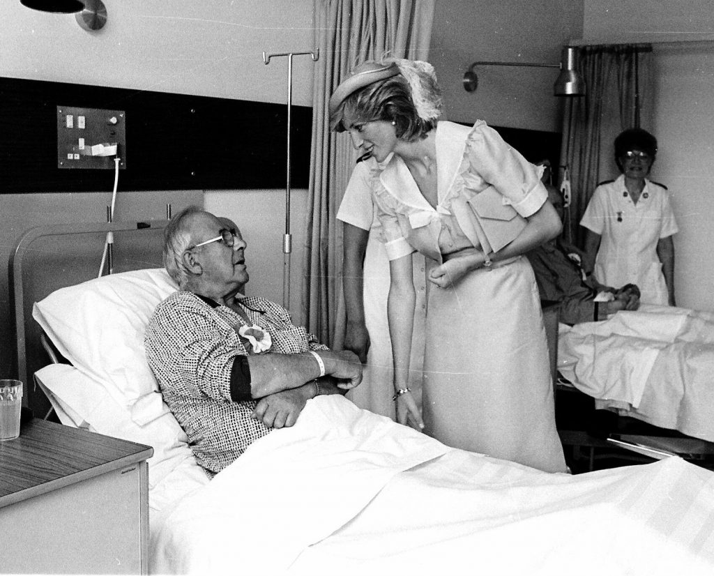

Early Life
Diana Spencer was born on July 1, 1961, the fourth of five children to John and Frances Spencer. Her birth took place at Park House, Sandringham, Norfolk. Her family had longstanding ties with the British royal family. Her parents initially wanted a boy and named her Diana Frances after her mother and a great-aunt who was a potential Princess of Wales. She was affectionately known as "Duch" within the family. Diana was baptised on August 30, 1961, at St. Mary Magdalene Church. Her early life was marked by the loss of her infant brother John and marital strain between her parents, partly due to the pressure to produce an heir. Diana grew up in Park House on the Sandringham estate, leased from Queen Elizabeth II, whom she referred to as "Aunt Lilibet."
When Diana was seven, her parents divorced. Her mother, Frances, began a relationship with Peter Shand Kydd and married him in 1969. During the separation in 1967, Diana lived with her mother in London, but her father, John, won custody and Diana was soon living with him. In 1976, John married Raine, Countess of Dartmouth, and Diana’s relationship with her stepmother was strained, leading to incidents of conflict. Diana described her childhood as "very unhappy" and "very unstable." After her father inherited the title of Earl Spencer in 1975, the family moved from Park House to Althorp, the family estate, and Diana became known as Lady Diana.

Charity Work and Patronages
HIV

In the 1980s, Diana began working with AIDS patients, challenging the prevailing stigma by making physical contact with them, a first for a British royal. In 1987, she famously held hands with an AIDS patient to help destigmatize the condition, stating that HIV-positive individuals were not dangerous and deserved compassion. Despite some resistance from the Queen, who preferred Diana engage in "more pleasant" activities, Diana continued her advocacy. She opened the Landmark AIDS Centre in London in 1989 and Grandma's House for young AIDS patients in Washington, DC, in 1990. Diana was also a patron of the National AIDS Trust and frequently visited care facilities for HIV patients. Her efforts included hugging patients and supporting AIDS research.
In March 1997, Diana met Nelson Mandela in South Africa, leading to a planned collaboration between the Nelson Mandela Children's Fund and the Diana, Princess of Wales Memorial Fund to support AIDS victims. Mandela praised Diana for using her celebrity to combat stigma and improve the lives of those affected by HIV/AIDS.
LANDMINES

She was a patron of the HALO Trust, an organisation dedicated to removing landmines and war debris. In January 1997, she attracted global attention by visiting a minefield in Angola while wearing a ballistic helmet and flak jacket. Despite facing criticism and accusations of political meddling from officials like Lord Howe, her efforts significantly raised international awareness about the dangers and suffering caused by landmines.
In June 1997, Diana spoke at a landmines conference and supported anti-landmine initiatives in Washington, DC. Shortly before her death, she visited Bosnia and Herzegovina with landmine survivors to further highlight the issue. Diana’s advocacy was influential in the signing of the Ottawa Treaty, which aimed to ban anti-personnel landmines. Her work was recognized by Foreign Secretary Robin Cook in a parliamentary speech, and the International Campaign to Ban Landmines won the Nobel Peace Prize a few months after her death.
CANCER

Diana’s first solo official trip was to The Royal Marsden NHS Foundation Trust, a cancer treatment hospital in London, which she later supported through a clothing auction in New York. She became president of the hospital on June 27, 1989, and opened the Wolfson Children’s Cancer Unit on February 25, 1993. Diana was instrumental in removing the stigma associated with cancer and other diseases.
In February 1996, she visited Pakistan to support a newly opened cancer hospital built by Imran Khan and attended a fundraising event in Lahore. She returned to the hospital in May 1997. Diana also travelled to Chicago in June 1996 as president of the Royal Marsden Hospital, where she raised over £1 million for cancer research and supported breast cancer research through various events.
Additionally, Diana opened Children with Leukaemia (now Children with Cancer UK) in January 1988, honouring two young cancer victims. Her support for this charity continued until her death in 1997.
Legacy
Diana, Princess of Wales, remains a beloved figure in history, known for her compassion, style, and high-profile charity work. Despite a troubled marriage with Prince Charles and media scrutiny, she maintained significant popularity and influence. Her work, particularly in advocating for HIV/AIDS awareness, and her approach to charity were seen as modernising the royal family’s image.
Diana’s personal life and public persona were complex: she was both admired for her charitable efforts and criticised for her interactions with the media and her sometimes erratic behaviour. She was described as both a devoted mother and a tough, sometimes difficult individual. Her death in 1997 led to a massive outpouring of grief and had a lasting impact on public sentiment, influencing discussions on mental health and charity.
Critics, however, questioned her motivations and behaviour, and her relationship with the press was often ambivalent. Despite differing opinions on her legacy, Diana's impact remains significant, with her influence still felt in societal attitudes and charitable work.